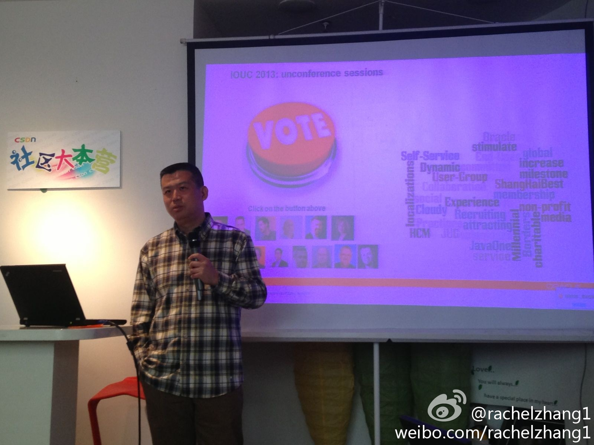

更正。//@Richard宫文学:不是CTO，是原来做知识动力总经理时候的情况。@Ada李力:@Richard宫文学 谈到离开做了十几年的企业软件领域原因是，技术本身所起到的作用太低。他做为公司的CTO, 有这种现象，他不干活，产品就赚钱，他干活，产品反而不赚钱。在座的几位纷纷表示，技术出身的人要克制自己什么都想自己解决，自己去实现的习惯。
还需多探讨哈。[呵呵]//@Richard宫文学:感谢@Ada李力 和CSDN的组织。社区化、社会化，已经越来越深入人心。@Ada李力:晚餐后，还有几位高人在给CSDN社区做顾问，我听到的有社区的社区，淘宝，开菜市场，武林盟主，平台等说法。比较狠的说法是，到现在也没摆脱媒体思路，比如这种观点：认为只要有高质量内容，流量，人群，活跃度，自然有价值。
勇气(courage)分值200，是正能量和负能量的分水岭。说整个社会的平均值是205，真是个好消息。@妞博网:情感能量，你到第几级？——著名心理学家David R. Hawkins分析了各类情感的能量等级，从最负面、伤身的情感，到最正面、滋润的情感。所有情感里面，排的最低的不是愤怒、悲伤、恐惧，你认为应是什么？排的最高的不是骄傲、勇气、真爱，你觉得会是什么？网页链接
在微信的朋友圈发过信息，据说它和QQ Zone的设计思路一直，相互关注的人才可以看到你发的内容。现在转回到只用微博发信息了。对我来说，只要发到网上会公开的东西，就应该是认识的不认识的人都可以看到，没有半公开这个状态。如果不希望被人看到，根本就不应该发出来。
博客刚兴起时，有些人把它当公开日记用，又担心不法之徒会据此分析得到自己的隐私。其实，隐私泄露类似“不怕贼偷，就怕贼惦记”这种规律。绝大部分人的隐私，是没有人感兴趣的。在信息泛滥年代，眼球变得很稀缺。获得关注的渴望，要大大强过对隐私泄露的担心。
回复@tanyang210:我微信的朋友圈里，有朋友，有同事，也有不认识但相互知道对方是谁的人。本来只想把微信设为生活私人所用，但发现生活工作，已不可分。 //@tanyang210:话说如果发的大家都能看见，微信朋友圈就变成了微博了，只是朋友圈里面基本都是朋友，微博里面有很多不认识的人。@Ada李力:在微信的朋友圈发过信息，据说它和QQ Zone的设计思路一直，相互关注的人才可以看到你发的内容。现在转回到只用微博发信息了。对我来说，只要发到网上会公开的东西，就应该是认识的不认识的人都可以看到，没有半公开这个状态。如果不希望被人看到，根本就不应该发出来。
回复@paroca:这么说，我是从IT领域已经跳进互联网领域里了。[呵呵] //@paroca:因为您是一个互联网人士。@Ada李力:在微信的朋友圈发过信息，据说它和QQ Zone的设计思路一直，相互关注的人才可以看到你发的内容。现在转回到只用微博发信息了。对我来说，只要发到网上会公开的东西，就应该是认识的不认识的人都可以看到，没有半公开这个状态。如果不希望被人看到，根本就不应该发出来。
我颇有印象的还有：国外技术社区在解决learning, networking, product的需求之外，还有一个voice需求。@rachelzhang1:UG=p*p+t，核心是人和时间，人的权重和社区节奏是研究如何发展社区的关键。@家常咖啡 
赞一个。@研究者July:没去找房子租，反带着笔本来北大教室"办公”了，早已把英雄会当成是自己的工作，投入的兴趣和热情至少是以前的3倍以上，无惧未来，改变。 我在#百周年纪念讲堂# 北京·百周年纪念讲堂
回复@曹胜欢:我们在招数据分析，数据挖掘，机器学习方面的人才，欢迎加盟。@范凯robbin //@曹胜欢:在@ csdn 混迹了这么长时间，突然有种很想到@CSDN 工作的欲望 //@Ada李力:赞一个。 //@Ada李力:赞一个。@研究者July:没去找房子租，反带着笔本来北大教室"办公”了，早已把英雄会当成是自己的工作，投入的兴趣和热情至少是以前的3倍以上，无惧未来，改变。 我在#百周年纪念讲堂# 北京·百周年纪念讲堂
回复@Adela可爱多:运营部门做为成本中心的原则就是少花钱，多办事。 //@Adela可爱多:呃，控制预算很重要 //@Ada李力:看来选地点很重要。@Adela可爱多@Y小骨頭Y:来参加CSDN社区大本营的社区领导人俱乐部活动，地点选的很有气氛，据说很有名…可我居然第一次来…我在:#3w coffee#
#中庸#楼下超市卖椰子，个头儿有大有小，价格都是十块钱。我第一反应是当然挑最大个的，但明俊考虑后，选了个中等个头的，他给出理由是：“如果大椰子好，一定早给挑完了，卖东西的人也说中等的比较好”。姣姣听了还点头附和：“有道理”。
恭喜恭喜。@GoodERP_Jeff:恭喜csdn社区大本营喜获OpenERP中文社区入驻 网页链接 @Ada李力 @ZoomQuiet @程开源 @ben_杜玉杰 @海飞-ERP @OSCG-老K @Huihoo
回复@冯宇彦-云计算:刚上线的产品，邀请试用 网页链接 //@冯宇彦-云计算:老看你说社区大本营活动，怎么csdn网页上找不到相关信息？哪里是入口啊。网络营销应该先从自家的网站做起。 //@Ada李力:恭喜恭喜。@GoodERP_Jeff:恭喜csdn社区大本营喜获OpenERP中文社区入驻 网页链接 @Ada李力 @ZoomQuiet @程开源 @ben_杜玉杰 @海飞-ERP @OSCG-老K @Huihoo
云计算公司的办公室，自然应该也在云中飘着。//@qyjohn_: 这算啥。我在桉树工作四个多月了，还不知道我们的办公室在哪里。@Ada李力:我们公司办公室没有人：云端公司运作两年多经验谈 网页链接 @极客头条